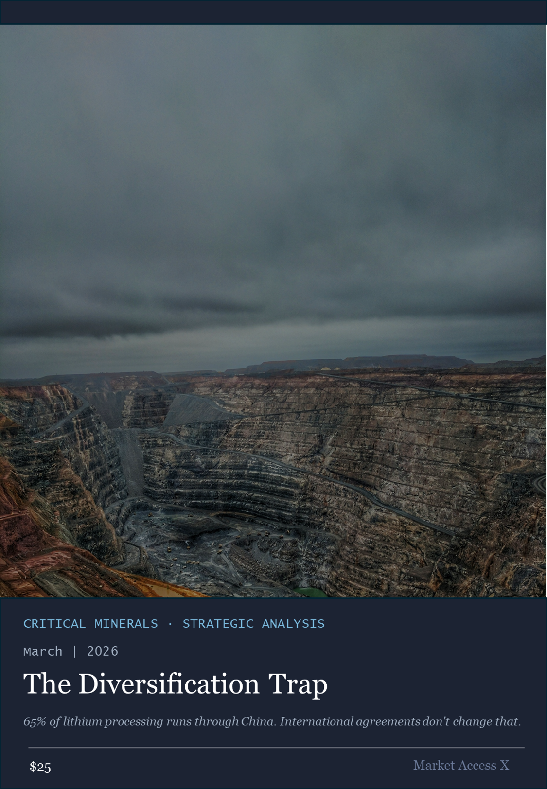

Policy scenario modeler · Mining → Processing → End-use · Market Access X

Strategic Analysis Report
The Diversification Trap
Why critical minerals agreements won't solve anyone's supply chain problem — and where exposure actually concentrates in the midstream.